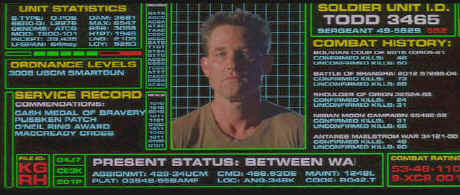

Warner/1998/99m/ANA 2.35, PS 1.33
 |
Check out Todd's service record:)©Universal |
Kurt Russell is a much
underrated actor. Soldier, while on one level seems a limited range for an actor,
presents a challenge to Russell in finding an economy of emotional range that conveys
enormous feeling with only the slight use of facial expression. Somewhere behind the cold
blue of the eyes lies the heart of a man trying to find his humanity.
The screenplay by David Webb Peoples is more than a dozen years
old. It has the qualities missing from many of today’s action films and that’s
character development. Even the compact opening indoctrination sequences taking Todd and
company through infancy to killer force readiness have enough information in them to
create an interesting history. With a filmography. that includes Blade Runner, Twelve
Monkeys and even Unforgiven, Peoples must get respect.
Director Paul Anderson moves Soldier along like a
Blitzkrieg. He captains this team of moviemakers with the spirit of adventure and
excitement. While Anderson's prior Scifi venture Event Horizon was the slick and
empty ,Anderson displayed a great visual sense which carries over into Soldier.
Soldier delivers everything you could ask of a DVD. The
visual impact is consistently stunning. The very sharp transfer is virtually free of
artifacts. Difficult image material like fog , smoke and dust flows over the screen
smoothly. Contrast levels in testy sequences are well handled preserving the mood without
sacrificing clarity. The Dolby Digital 5:1 sound is a show in itself. Directionality is
pinpoint, explosions have bass impact to spare and bullets penetrate every corner of the
room. No one is safe.
Soldier is delivered with an provide an audio commentary
from Director Paul Anderson and Producer Jeremy Bolt and actor Jason Issaics that reflects
a love of the movies. They present many details of the filmmaking process and look with
fairly objective eyes at their finished product.